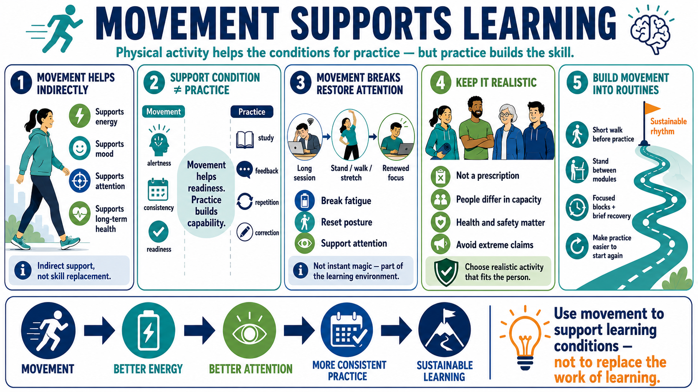

Movement and Physical Activity
Connecting to LMS... Progress: in progress

Narration
Physical activity can support learning indirectly by supporting energy, mood, attention, and long-term health at a general level. Movement does not replace study, feedback, or practice. It helps create conditions where practice is more likely to happen with alertness and consistency. This distinction keeps the discussion practical rather than exaggerated.
Movement breaks can be especially useful during long workdays or learning sessions. Standing up, walking, stretching within personal capacity, or changing posture can interrupt fatigue and restore attention. The value is not that every movement break creates instant neuroplasticity. The value is that attention and energy are part of the learning environment.
Exercise should be discussed as a non-clinical performance support, not as a prescription. People differ in capacity, health needs, access, time, and safety considerations. Extreme training claims are not useful here. The responsible approach is to encourage realistic activity choices that fit the person and do not create unsafe pressure or replace qualified guidance.
For training and behavior design, movement can be built into routines. A learner might use a short walk before a difficult practice session, stand between modules, or schedule focused work in blocks with brief recovery. The aim is not constant activity. The aim is to support sustainable rhythms that make deliberate practice easier to start and easier to repeat.